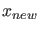

Next: Adaptation Up: Fold Continuation Previous: Bifurcations along a fold Contents
In this command xnew must be a vector that contains the values of the state variables. p must contain the current values of all the parameters and ap must be the indices of the active parameters. In the most natural situation where x is the matrix returned by the previous equilibrium curve continuation one starts to build  by the command xnew=x(1:nphase,s(i).index), where nphase is the number of state variables and s(i) is the special point structure of the detected fold point on the equilibrium curve continuation. Next, the command p(ap_old)=x(end,s(i).index); replaces the old value of the free parameter in the previous run by the newly found parameter p. odefile specifies the ode-file to be used. bp are the optional indices of the branch parameters. It also works without entering a value for this field.
MATCONT provides four other initializers which allow to continue a fold curve from a codim 2 equilibrium bifurcation, namely init_BP_LP.m, init_BT_LP.m, init_CP_LP.m and init_ZH_LP.m. In fact, these initializers are only added for ease of use: they refer back to init_LP_LP.m.